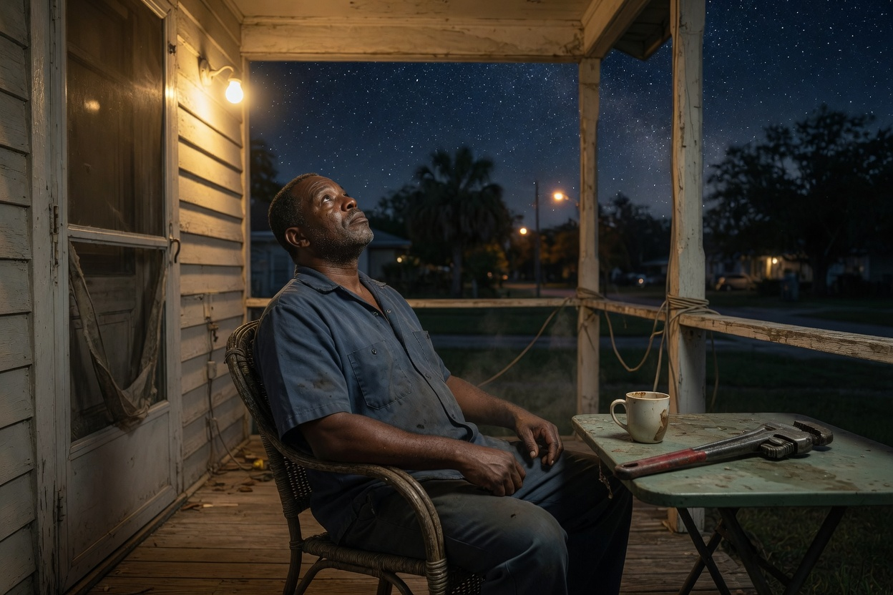
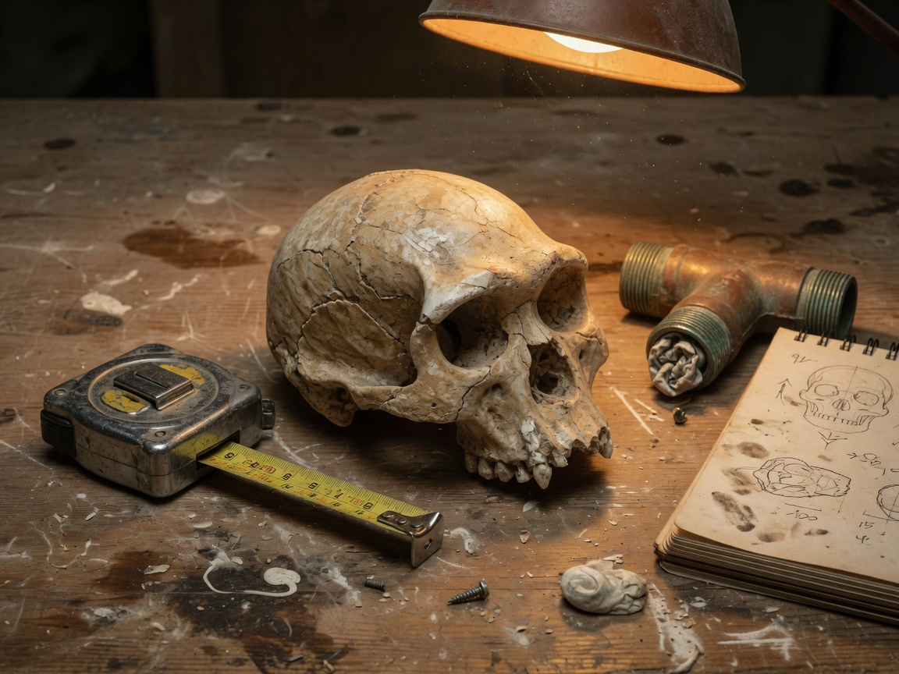
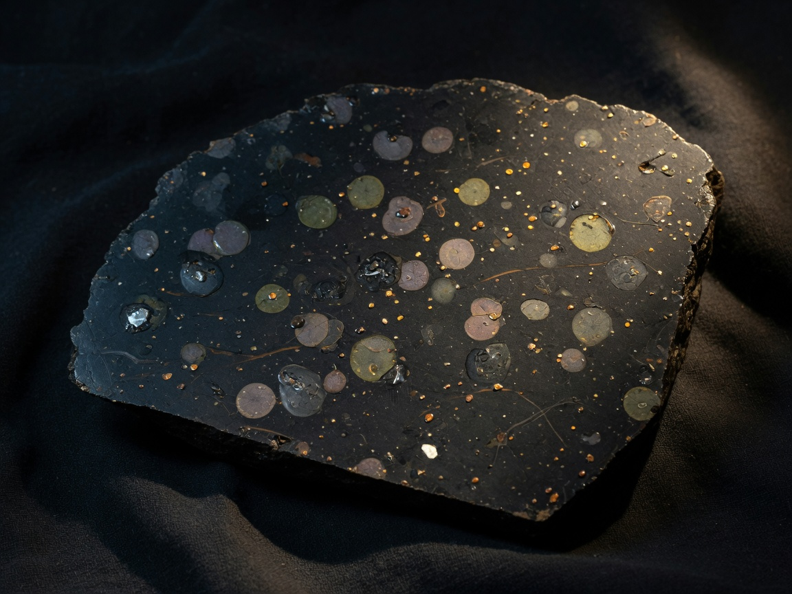

1. We evolved here
Life started on Earth (or arrived as chemistry), then changed, slowly, into us. Bones, DNA, and our bodies all point to Africa, then the whole planet.

You think humans are not from Earth. Tonight we do not laugh at that. We open both folders, then you give the verdict in English.
Smart people lose this argument because they fight three fights at once. Separate them, and you suddenly sound like a scientist.
Life started on Earth (or arrived as chemistry), then changed, slowly, into us. Bones, DNA, and our bodies all point to Africa, then the whole planet.
Maybe the first spark of life did not start on Earth. Amino acids ride inside meteorites. A microbe could, in theory, survive a trip on a rock. That would still mean humans evolved here after the spark arrived.
Ancient astronauts, seeders, Anunnaki. This is the claim you are really making. It is the hardest one to prove, and the one with the weakest evidence.
Those are three different claims. They are not the same thing.
If humans arrived last week from another world, somebody left a lot of bones, and they look like a family.

A gap in the chain is normal. A chain with no links would be the surprise.
Our closest living relatives are chimpanzees and bonobos. Non-African people still carry about 1 to 2 percent Neanderthal DNA. We did not only look similar. We mixed.
Great apes have 24 pairs of chromosomes. Humans have 23. Two ape chromosomes fused, end to end. The old caps are still in the middle. One old centromere is still there, retired.
Human chromosome two is a fusion. You can still see the joint.
Vitamin D from this sun. Bones and blood pressure for 1G. Lungs for about 21 percent oxygen. A body clock that expects a 24-hour day. If we were built for another world, this one would fight us harder.
If you want to defend your idea like an adult, start here. Do not start with pyramids.

The Murchison meteorite fell in Australia in 1969. Inside: amino acids and nucleobases, the pieces of proteins and DNA. Some of those amino acids are rare on Earth, so this is not just dirt from a farm.
Life’s bricks fall from the sky. That part is not a theory. It is a lab result.
Tardigrades survive vacuum and radiation. Rocks blasted off Mars can land on Earth. So a microbe taking a ride is physically possible. Scientists call this panspermia. They argue about it in papers, not in memes.
Panspermia is possible. It is not the same as ancient astronauts.
Francis Crick helped discover the shape of DNA. In 1973 he and Leslie Orgel published “Directed Panspermia”: maybe a civilization sent microbes on purpose. They offered a hypothesis, not a proof. Smart people are allowed to ask wild questions. Asking is not answering.
Erich von Däniken, 1968, Chariots of the Gods: pyramids, Nazca, “too advanced for humans.” Archaeologists answer with quarries, copper tools, worker villages, and unfinished stones. Zecharia Sitchin’s Anunnaki translations are rejected by Sumerian scholars.
A mystery is not an alien. A mystery is a job.
You do not guess where the leak is. You shut the valve, pressurize, and look. Science is the same habit with bigger tools.
One line at a time. A wet wall is a clue, not the source.
A feeling is a clue. A fossil, a gene, a rock: those are tests.
If Wilfredo is right that humans were brought here, we should one day find at least one of these:
Isotopes in the bone that do not match this planet's water and crust.
A body that does not use DNA and RNA, or uses a code that does not fit the Earth family.
An alloy or a craft whose materials do not exist in this solar system's chemistry.
A mystery is not proof. I want evidence I can test.
A man who can argue the other side is dangerous in a good way. Do Earth first, then the sky, out loud.
According to the evidence, humans evolved in Africa. You can still see the fusion in chromosome two.
On the other hand, meteorites carry amino acids. Panspermia is possible, but it is not proven.
I'm not convinced that aliens dropped humans here. I want evidence I can test.
Science and English in the same pass. Green means you understood it. You can miss and try again.
Four sentences in English. You can still believe what you believe. You just have to say it like a man who opened both folders.
1. What does Earth's folder show?
2. What is the strongest point for the sky?
3. Are you talking about panspermia, or about someone dropping humans?
4. What would convince you to change your mind?
Saved on this phone. Read it out loud to Gabriel.
You do not have to pick a team. You have to pick a test. That is how a plumber thinks, and that is how a scientist thinks.
ARCHES · Wilfredo · Origin Case · 2026-08-26